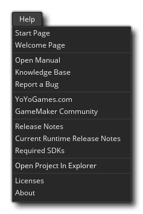

Dieses Menü bezieht sich auf die Hilfe bei der Verwendung von GameMaker Studio 2. Es enthält die folgenden Menüpunkte:
- Startseite - Dies öffnet einen neuen Arbeitsbereich für die Startseite.
- Begrüßungsseite - Dies öffnet die Begrüßungsseiten-Diashow in einem neuen Arbeitsbereich.
- Handbuch öffnen - Öffnet das Hilfedokument. Beachten Sie, dass Sie auf die Hilfeschaltfläche klicken In der Menüleiste wird das Dokument ebenso geöffnet wie das Drücken von
.
- Knowledge Base - Hier gelangen Sie zur GameMaker Studio 2- Hilfe, wo Sie Artikel zur Plattformeinrichtung, bekannte Probleme, die Verwendung von GameMaker Studio 2 und eine Reihe anderer Dinge finden.
- Fehler melden - Sollten Sie irgendwelche Fehler finden oder Probleme haben bei der Verwendung von GameMaker Studio 2 können Sie sie hier berichten.
- YoYo Games.com - Öffnet die Hauptseite von YoYo Games.
- GameMaker Community - Dies öffnet die GameMaker Community Foren in Ihrem Browser. Beachten Sie, dass es sich um ein Community-Run-Forum handelt. Wenn Sie einen Fehlerbericht haben oder technische Unterstützung benötigen, sollten Sie zuerst zum offiziellen Support- Forum gehen (siehe oben).
- Release Notes - Dies öffnet die Release Notes für GameMaker Studio 2 in Ihrem Browser. Wenn Sie ein Update rückgängig machen müssen, können Sie frühere Versionsprogramme herunterladen, indem Sie auf dieser Seite auf den Link Versionsnummer klicken.
- Aktuelle Runtime Release Notes - Da sich die Runtime unabhängig von der IDE aktualisieren kann, gibt es eigene Runtime Release Notes. Wenn Sie diese Option auswählen, werden sie in Ihrem Browser geöffnet. Beachten Sie jedoch, dass die aktuelle Laufzeit möglicherweise nicht die von Ihnen verwendete ist. Um herauszufinden, auf welcher Runtime Sie sich befinden oder wie Laufzeiten hinzugefügt, entfernt oder aktiviert werden können, lesen Sie den Abschnitt Runtime-Einstellungen.
- Erforderliche SDKs - Aufgrund des plattformübergreifenden Charakters von GameMaker Studio 2 eine Reihe von Drittanbieter-SDKs erforderlich. Wenn Sie auf diese Schaltfläche klicken, gelangen Sie zu einem Artikel im Support-Forum, in dem auf plattformspezifischer Basis erläutert wird, was Sie benötigen.
- Projekt im Explorer öffnen - Dies öffnet den Speicherort des aktuell geladenen Projekts im OS-Datei-Explorer.
- Info - Öffnet das Fenster "About GameMaker Studio 2 ", in dem Sie Versionsinformationen zum Produkt erhalten können (wichtig für die Meldung von Fehlern oder Problemen).